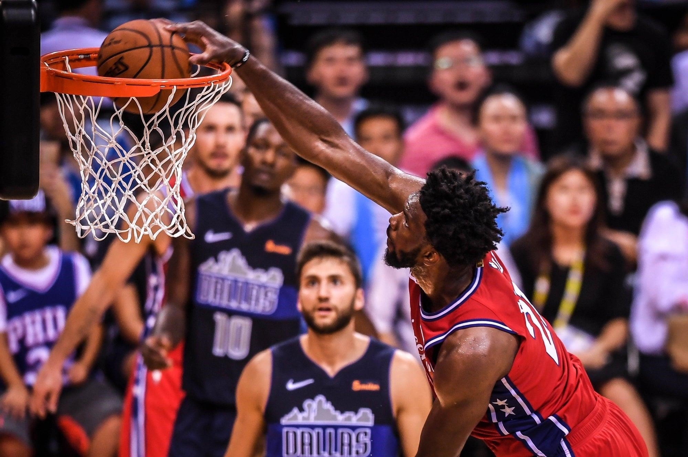
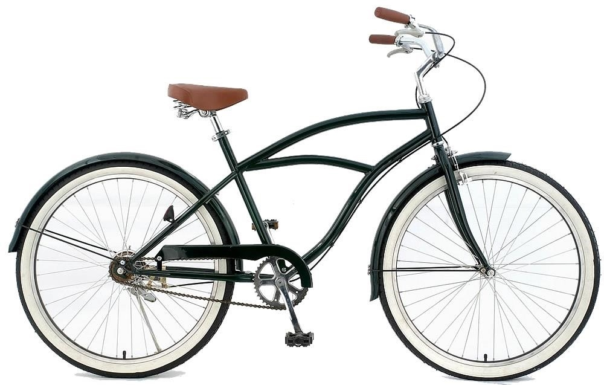

Mój osobisty blog sportowy
Witam w moim blogu. Zapisz się i uzyskaj mój ostatni wpis w swojej skrzynce pocztowej.

Jak uderzyć z boku do koszykówki ochronie Część 2
upewnij się, że można zachować dobry balans przed zrobieniem zdjęcia..
Czytaj dalej →
Czyszczenie i ochrona twoich подсадных kaczki
1. Wyczyścić подсадные kaczki w rzeczywistości jest łatwe; jednak istnieją pewne rzeczy, które nigdy nie powinno się z nimi zrobić. Nigdy nie należy używać silnych detergentów do czyszczenia swoich подсадных kaczek, tak jak woda i chlor nieodwracalnie uszkadzają figurki. Najlepiej byłoby przed użyciem lekko skropić przynęty dla kaczek sprayem na bazie PVC.
Więcej →

Ewolucja rowerów
Rower jest obecnie uważana za jedną z najbardziej popularnych środków transportu, które wcześniej można było zobaczyć tylko na torach wyścigowych. To zaspokaja zapotrzebowanie, który wcześniej nie był postrzegany jako wymiana samochodu, ponieważ roweru nie wymaga dużo paliwa do pracy, a także szybsze i zwrotniejsze., co pozwala na wykonywanie dłuższych podróży.
Więcej →

Najlepsze miejsca dla profesjonalnych połowów, które można odwiedzić
Miejscem akcji była temperatura 1931 roku, a większość ośrodków społeczności Atlanty w większości przypadków były zamknięte dla białych rybaków z wodą morską.Prądy idące z północy, zapewniały stały dopływ składników odżywczych i żywności, zapewnienie, że w każdym profesjonalnym rybackiej społeczności Atlanty będzie zdrowy karp.
Czytaj dalej →
Jak naprawić płaski staw z pomocą антиобледенителей do stawu na podwórku
Mechaniczna instalacja fontanny i strumienia wody, w ten sposób, jest stosunkowo prosta. W zasadzie trzeba obliczyć objętość wody, ustawiając pompę zgodnie z wymaganym poziomem i podłączając filtracyjne zawory. Zbierz wodę i kiść lub wlać ją do filtra. Dla oczka, najprawdopodobniej będziesz musiał polegać na metodzie oszczędzania podłogi - wystarczy położyć oszczędności podłogi wokół urządzonego terenu, umieść pompę na jednej linii z oszczędności, опрыскайте lub wylej na niego wodę.
Czytaj dalej →